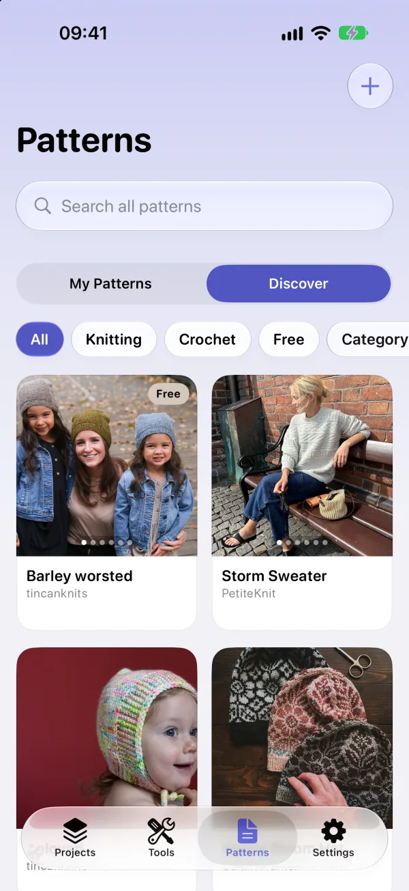

Ravelry patterns on iPhone, iPad and Mac
Ravelry is where many knitters and crocheters go to find their next pattern. YarnSpace brings that search into a native app for iPhone, iPad and Mac: discover Ravelry patterns and yarns with filters and ratings, then keep the pattern right next to your row counter, your yarn and your notes.
Free download · iPhone, iPad, Mac & Apple Watch · No account needed
Please note: YarnSpace is an independent app. Pattern and yarn information comes from Ravelry, but YarnSpace is not made by, affiliated with or endorsed by Ravelry.
Why browse Ravelry patterns in an app?
Ravelry's database of patterns and yarns is huge, and that's exactly why it helps to have it close to the rest of your knitting. When you find a pattern you like, the next questions are always the same: Do I have yarn for it? Which needle or hook size? Where was I in the last project? In YarnSpace, the answers live in the same place:
- Discover patterns with filters and ratings, for knitting and crochet.
- Search Ravelry patterns and yarns without signing in. You don't need a Ravelry account, and you don't need a YarnSpace account either.
- Your own patterns too. Add your own PDFs and links next to the ones you found on Ravelry, so every pattern you work from is in one list.
- Patterns for a yarn you have. Start from a yarn in your stash and find patterns that use it.
- Stash check (Pro): for every pattern, YarnSpace looks for the yarn it calls for, or one that works just as well, in your stash and tells you whether you have enough and how many skeins are missing.

From pattern to project
A pattern is only the start. Once you cast on, YarnSpace keeps the pattern with the project, along with its row counter, reminders for the rows that matter, a timer, photos and notes. You see the pattern, your count and your yarn together instead of jumping between a browser tab, a counter and a notes app.
If the yarn a pattern calls for is discontinued or out of your budget, YarnSpace suggests substitutes by gauge, yardage and fiber and compares them side by side, including how many skeins you'd need and what they cost. You see all yarn substitutes with YarnSpace Pro. Our guide on how to substitute yarn explains what to look for.
On iPhone, iPad and Mac
YarnSpace is a native app on iPhone, iPad and Mac, not a website squeezed onto a small screen. Browse patterns on the big iPad or Mac screen in the evening, then pick up your project on the iPhone the next day. Your projects sync through your own iCloud, and the optional Apple Watch app (YarnSpace Pro) lets you count rows on your wrist.

Tips for finding the right pattern
- Start with the yarn weight. If you already have yarn, look for patterns written for that weight. It saves you from fighting the gauge later.
- Check the gauge and the needle size. A pattern's gauge tells you how the fabric is meant to feel. Our needle and hook size chart converts US, UK and metric sizes, and the gauge swatch guide shows how to match it.
- Look at the yardage early. Patterns list how much yarn each size needs. Compare it with your stash before you fall in love; our guide on how much yarn you need helps when the numbers don't line up.
- Look beyond the designer's photo. Ratings and other people's finished projects show how a pattern works up on real bodies and in other yarns, which is often more telling than a styled photo shoot.
Free, with an optional Pro upgrade
Discovering Ravelry patterns and keeping your own patterns is free, together with up to three projects at a time, all counters, your yarn stash and most calculators. YarnSpace Pro is a monthly or yearly subscription with a one-week free trial. It adds unlimited projects, the Apple Watch app, all yarn substitutes, the stash check in patterns, the yarn label scan and more.
YarnSpace needs no account and doesn't track you; there are only anonymous usage statistics, which you can turn off. See the privacy policy for details.
Frequently asked questions
Is YarnSpace the official Ravelry app?
No. YarnSpace is an independent knitting and crochet app that lets you discover and search Ravelry patterns and yarns. YarnSpace is not made by, affiliated with or endorsed by Ravelry.
Do I need a Ravelry account?
No. You can discover and search Ravelry patterns and yarns without an account. YarnSpace itself needs no account either.
Does it work on iPad and Mac?
Yes. YarnSpace runs on iPhone and iPad with iOS 26 or later and on Mac with macOS 26 or later, and your projects sync through your own iCloud.
Is browsing Ravelry patterns free?
Yes. Your own patterns and Ravelry discovery are part of the free app. YarnSpace Pro adds the stash check in patterns, the yarn label scan, unlimited projects and more.
Your next pattern, right next to your projects
YarnSpace is the knitting and crochet app for iPhone, iPad, Mac and Apple Watch. Free to download.